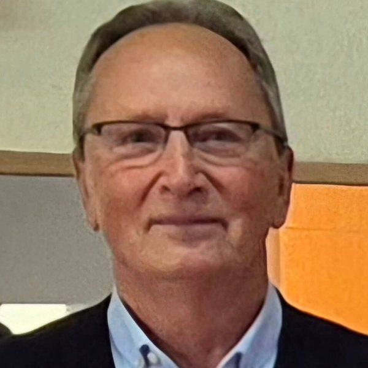
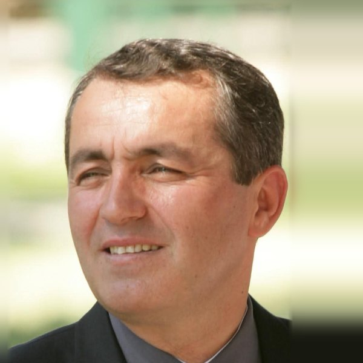
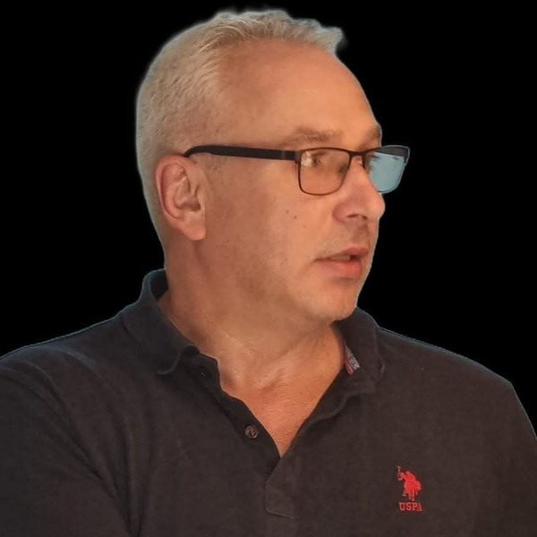
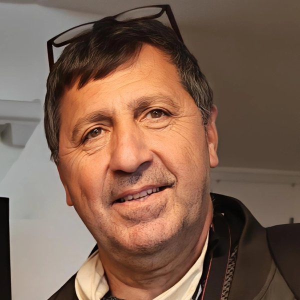

Misterul contului dispărut
Un joculeț interactiv despre siguranța online.
Mihai, 10 aniRoblox3 suspecțiindiciisoluție
Ateliere vesele care îi învață pe copii să gândească critic și să aleagă în siguranță.
Bilanț 2024–2026. Vezi detaliile
Fiecare atelier pornește de la un om care spune „da”.
Alege un program ca să vezi ce fac copiii, ce învață și cum îl poți aduce la școala ta.
Așa arată, pe scurt, un atelier Pro Reziliența. Bune la ora de dirigenție sau acasă, cu familia.
Un joculeț interactiv despre siguranța online.
Șase mesaje. Care sunt în regulă și care ascund o capcană?
Patru situații din trafic. Alege varianta cea mai sigură.
Profesori, voluntari, părinți și firme: fiecare face un atelier posibil.
Peste 1.000 de participări ale profesorilor, în 2024–2026.
Elev, student, profesionist sau pensionar? Ai loc la noi.
Ce se învață la atelier crește acasă.
O masă de tenis a schimbat pauzele la Școala Fărcaș.
Prin Formularul 230, până pe 25 mai. Nu te costă nimic în plus. Formularul de aici are deja datele asociației: tu completezi doar datele tale și semnezi.
Spune-ne cum vrei să te implici.
Asociația pentru Copii și Tineri Pro Reziliența lucrează în școli și în comunități. Copiii investighează, se mișcă, desenează, citesc și discută. Așa învață să gândească critic și să facă alegeri sigure.
Voluntari și specialiști, de la polițiști și psihologi la medici și sportivi de performanță, își dăruiesc timpul și experiența ca fiecare copil să plece de la atelier mai încrezător.
Coordonează echipa și proiectele de educație nonformală pentru copii și tineri.

Sprijină proiectele care dezvoltă reziliența în fața factorilor de risc.

Ca psiholog, susține proiectele care dezvoltă reziliența emoțională.

Sprijină proiectele care dezvoltă gândirea critică.

Susține incluziunea și educația prin sport și mișcare.
Încurajează empatia și echilibrul emoțional.
O întrebare bunăUn adult care ascultăO echipă care te include
Schimbarea începe cu implicare și continuă prin comunitate
| Categorie | 2024 | 2025 | 2026 | Total |
|---|---|---|---|---|
| Copii / elevi | 2.687 | 4.478 | 5.374 | 12.539 |
| Profesori | 223 | 371 | 446 | 1.040 |
| Părinți | 76 | 126 | 152 | 354 |
| Total participări | 2.986 | 4.975 | 5.972 | 13.933 |
În anul școlar 2026–2027 desfășurăm programul „Educație pentru reziliență!” în școlile din județul Dolj.
Scrie-ne pentru un atelier, voluntariat sau parteneriat. Răspundem cu drag.
Pe scurt: fără reclame și fără urmărire. Folosim doar ce e necesar și, dacă vrei, ținem minte insignele tale.
Cookie-urile și tehnologiile asemănătoare (cum este stocarea locală din browser) sunt mici informații pe care un site le salvează pe dispozitivul tău, ca să țină minte anumite lucruri de la o vizită la alta.
Nu folosim cookie-uri de reclamă, de statistici sau de urmărire. Salvăm doar trei lucruri, în browserul tău:
pr-consentNecesar · mereu activȚine minte ce ai ales despre cookie-uri, ca să nu te întrebăm la fiecare vizită.
pr-limbaNecesar · mereu activȚine minte limba în care vrei să vezi site-ul: română sau engleză.
pr-insigneFuncțional · doar cu acordul tăuPăstrează insignele câștigate la jocurile din „Joacă-te”, ca să le regăsești data viitoare.
Fonturile site-ului sunt livrate de Google Fonts. Pentru asta, browserul tău se conectează la serverele Google, care văd adresa IP; serviciul nu setează cookie-uri.
Linkurile către Facebook sunt simple linkuri. Facebook își folosește propriile cookie-uri abia după ce intri pe site-ul lor.
Poți schimba oricând ce ai ales. Dacă retragi acordul, ștergem imediat insignele salvate. Poți șterge datele și din setările browserului.
Asociația pentru Copii și Tineri Pro Reziliența, CIF 49233637, Calea București nr. 40, bl. P3, sc. 1, ap. 25, Craiova, jud. Dolj.
Pentru orice întrebare, scrie-ne la prorezilienta@gmail.com. Ai și dreptul să depui o plângere la Autoritatea Națională de Supraveghere a Prelucrării Datelor cu Caracter Personal (ANSPDCP).
Ultima actualizare: 13 noiembrie 2026
Folosim doar ce e nevoie ca site-ul să funcționeze. Cu acordul tău, ținem minte și insignele câștigate la jocuri. Fără reclame, fără urmărire. Află mai multe